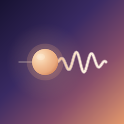
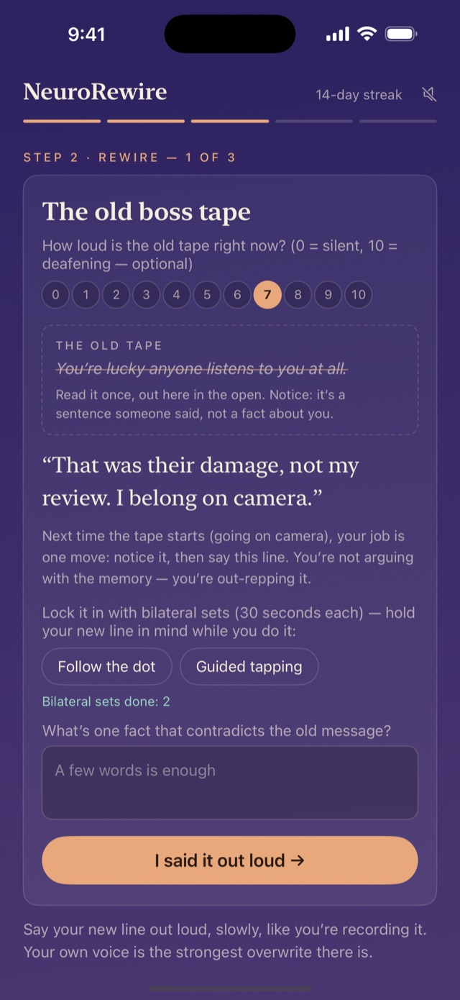
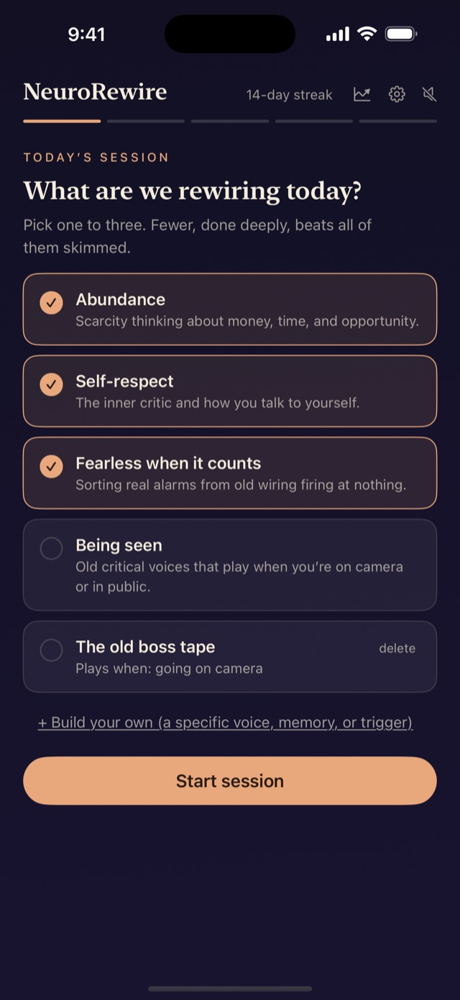
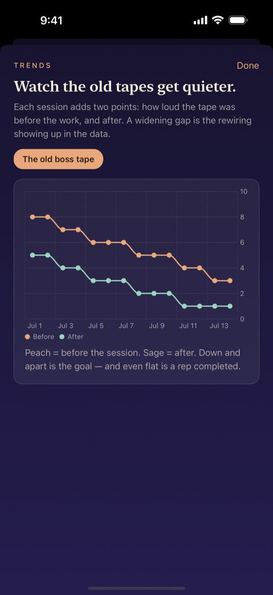
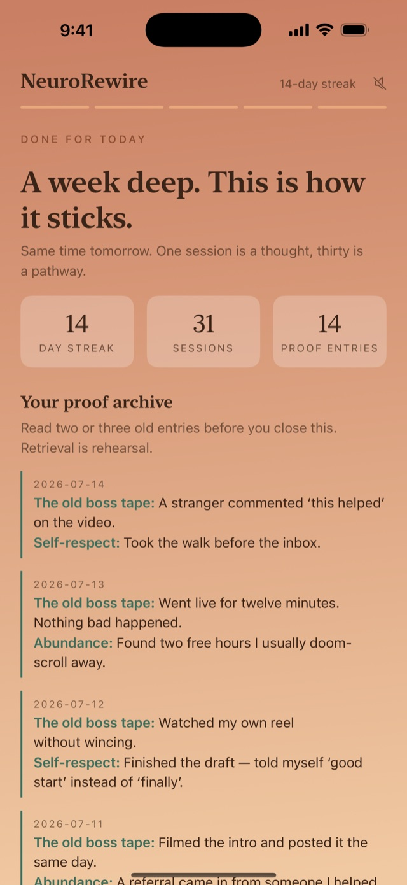

NeuroRewireA daily practice · a few quiet minutes
“You’ll never be good enough.”
Old criticisms replay because your brain predicts from old data. NeuroRewire is a short evening ritual: settle your nervous system, say your new line out loud, and log the proof, so the old tape stores back a little weaker every day.

The practice
The screen darkens like dusk when you begin and warms toward dawn as you finish. One session is a thought; thirty is a pathway.
Four built-in tapes, or write your own: the exact words, whose voice they’re in, and when they start.
Six slow rounds with a glowing orb. Long exhales tell your nervous system the threat is over; a braced brain won’t take new tape.
Read the old sentence once, out in the open. Then speak your replacement, slowly, while your eyes follow a slow left-right sweep or your hands tap a butterfly rhythm.
One line against each old belief. Every entry you re-read later weakens the automatic story a little more.
Your streak, your proof archive, and a chart of each tape getting quieter, week over week.
Inside
No feed, no followers, no red dots. The app opens, holds you for a few quiet minutes, and lets you go.



Privacy
What you write here is nobody else’s business. So the app is built to make collection impossible, not just avoided.
No account, no analytics, no ads, no crash reporting. The app makes no network connections at all.
Your entries live in one file on your device, protected by its built-in encryption. There is no server to breach.
Optional Face ID or passcode lock, and your journal is hidden from the app switcher.
Export everything as a plain file any time, and restore it anywhere. The file belongs to you.
NeuroRewire is free, with no paywall and no subscription. If it helps you, there’s a small tip jar inside. That’s the whole business model.
Before you begin
NeuroRewire is a self-reflection and wellness tool, not therapy, medical advice, diagnosis, or treatment. Its exercises are inspired by techniques used in EMDR but are not EMDR, and they are no substitute for working with a licensed therapist. If a memory brings up real distress, that’s territory for a trained professional. If you’re in crisis, contact local emergency services; in the US, call or text 988. Read the full disclaimer.